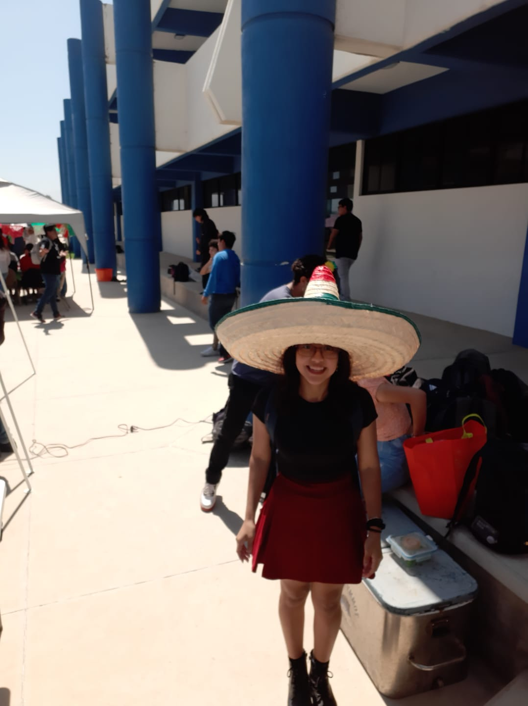
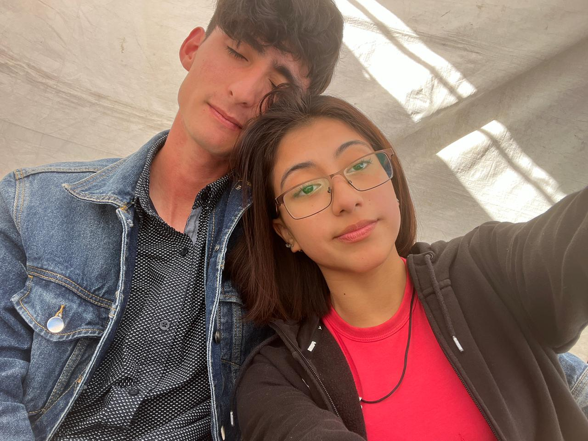
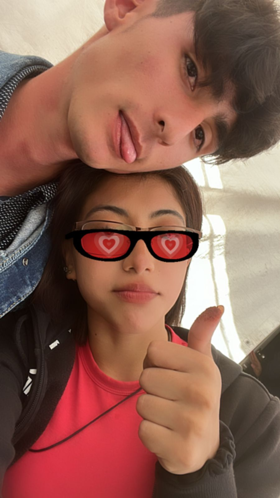
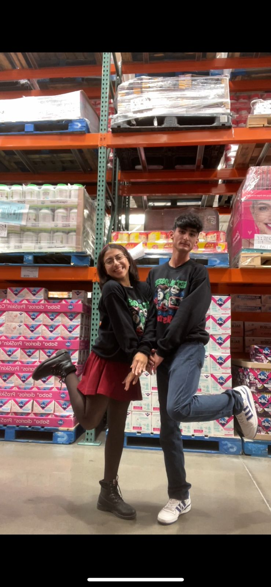

Para mi fueron muy bonitos recuerdos y me trajeron nostalgia ahora que los vuelvo a ver, me hace sentir triste el pensar que tal vez no podre repetirlos, cuando vi tu sonrisa en estos videos algo dentro de mi le duele y me hace un nudo en la garganta justo en este momento, el no poder ver de nueva esa felicidad provocada al estar conmigo me da impotencia, ojala fuera como en las peliculas, solo rebobinar el tiempo y no haber hecho todo este daño, ahora solo queda odiarme y sentirme estupido por haber estado alejando a esa bonita sonrisa. En serio, estraño esos tiempos, era feliz junto a una persona como tu.
Todo ese tiempo fue una de las etapas de mi vida que no olvidare no importa cuanto pase, marcaste algo en mi, algo bonito, como tu olor(tus perfumes), sacaste emociones que me parecieron bonitas y que no habia experimentado antes, estas cuantas fotos no alcanzan a describir todo lo bien que me hiciste sentir, y no hay palabras suficientes como para decirte todo lo que siento y duele
   Asi que te agradezco de corazon Julissa Gomero, por haber vuelto una parte de mi que no salia desde niño, un lado mas calido y por haberme hecho sentir comodo contigo, siempre cuando te abrazaba antes, era porque me sentia comodo, y sentia calidez, algo que dentro de mi extrañaba; puede que haya sentido un poco de celos cuando miraba que alejaban una persona con la que me habia encariñado despues de tanto timpo, una persona que se volvio mi sitio seguro...perdon por todo. Eres para mi algo que se volvio importante y especial en tan poco tiempo.
Eres casi la descripcion como dicen del "amor de mi vida en amistad", es su tiempo, cuando todavia para ti era un amigo y lo valia. Antes cuando me decian "si te haria caso", aunque no te queria ligar me hacia sentir bien, el pensar que me veian como una buena compañia para ti, en esos tiempo, sentia que lo estaba haciendo bien, hasta hoy, que todo lo estropie, y me lastima; ahorita que escribo esto.
Mis metas eran vivir en Ensenada e invitarte a salir para verte en ese vestido negro.
Extraño todo eso que hasta podria llorar de la impotencia y de la nostalgia :(